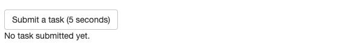
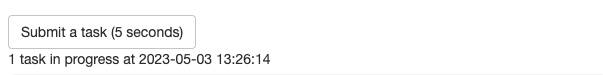
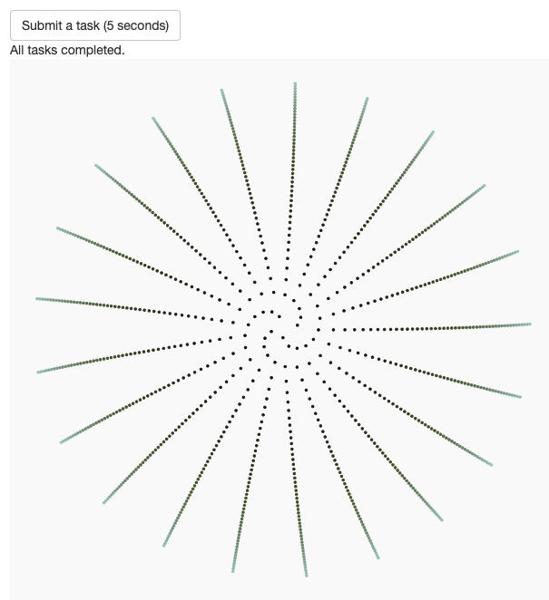
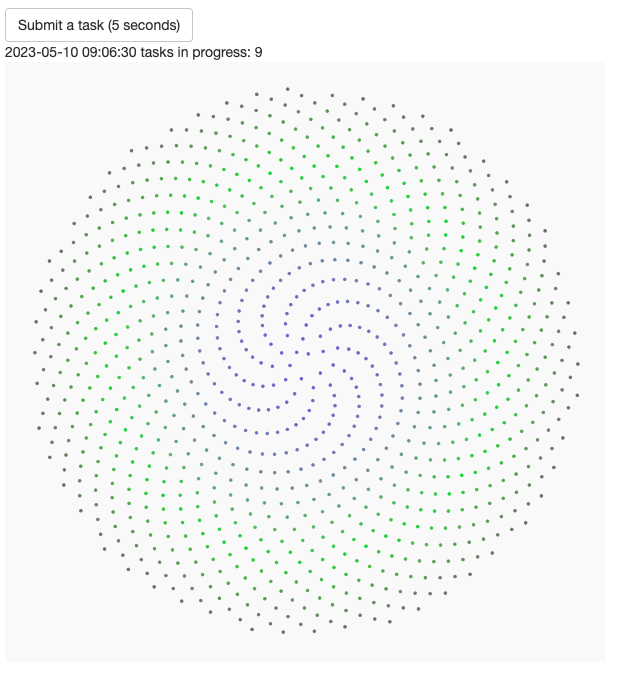
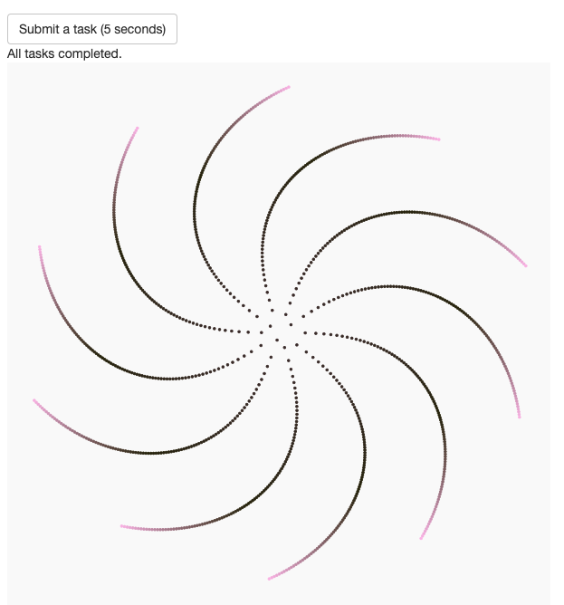

Shiny has revolutionized interactive web apps in R. However, because of the staggering breadth of possibilities it created, the official ecosystem still has unmet needs. In particular, long-running tasks are challenging because they may block the R session and cause the app to lag. Any degree of latency is detrimental because web app users expect instant responses. Long tasks should run asynchronously to free up the main process for user interactions.
The promises
package is a popular solution for asynchronous programming in Shiny.
With the help of future, it keeps
the main process free and responsive. However, as its own
documentation explains, the promises
package focuses on apps with only a small number of specific
bottlenecks. By design, it does not scale to the prodigious quantities
of heavy tasks that industrial enterprise-level apps aim to farm out in
production-level pipelines.
By contrast, crew scales out easily, and its controller
asynchronously manages all the tasks from a single convenient place.
This vignette demonstrates scalable asynchronous programming with
crew in Shiny.
We focus on the crew-powered Shiny app at https://wlandau.shinyapps.io/crew-shiny/. When it
launches, it looks like this:

When you click the “Submit a task (5 seconds)” button,
crew runs a long task in the background. Here, the task is
to wait 5 seconds and then generate a random phyllotaxis using
the aRtsy
package.1
The app continuously refreshes the current time and the number of tasks
in progress.

As soon as a task completes, the app retrieves the result from the
crew workers and plots the output.

You can submit many more tasks than there are workers currently running. In the following screenshot, the app is only running 4 workers, but the queue has 9 tasks left.

Thanks to the efficient scheduling of mirai in
the backend, crew workers successfully complete all
remaining 9 tasks. Because the app runs 4 workers, different plots may
appear less than 5 seconds apart.

The app depends on the following packages.
Each task waits 5 seconds and then generates a random phyllotaxis ggplot using the
canvas_phyllotaxis()
function from aRtsy.
run_task <- function() {
Sys.sleep(5)
canvas_phyllotaxis(
colors = colorPalette(name = "random", n = 3),
iterations = 1000,
angle = runif(n = 1, min = - 2 * pi, max = 2 * pi),
size = 1,
p = 1
)
}A separate function generates status messages based on the number of tasks in progress.
status_message <- function(n) {
if (n > 0) {
paste(format(Sys.time()), "tasks in progress:", n)
} else {
"All tasks completed."
}
}The user interface has a button to submit a task, a text output with the status, and a plot with the result of the most recently completed task.
ui <- fluidPage(
actionButton("task", "Submit a task (5 seconds)"),
textOutput("status"),
plotOutput("figure")
)The server begins
with reactive values and outputs for the random phyllotaxis plot
and the task status. In addition, reactive_poll controls
when the app scans for results.
server <- function(input, output, session) {
reactive_result <- reactiveVal(ggplot())
reactive_status <- reactiveVal("No task submitted yet.")
reactive_poll <- reactiveVal(FALSE)
output$result <- renderPlot(reactive_result(), height = 600, width = 600)
output$status <- renderText(reactive_status())Next, we start a crew controller with up to 4 workers
and an idle time of 10 seconds. We choose the local
process launcher below for this app, but we could have chosen the
Sun Grid Engine (SGE) launcher from crew.cluster,
a controller
group with multiple launchers, or a custom
launcher for e.g. Kubernetes.
With crew, anyone can write a custom
launcher plugin.
controller <- crew_controller_local(workers = 4, seconds_idle = 10)
controller$start()
onStop(function() controller$terminate())Every time the user presses the “Submit a task (5 seconds)” button,
the app pushes a new task to the crew controller, and the
task will start when a worker is available. We set
reactive_poll() to TRUE to tell the app to
scan for results in the observe() block covered next.
observeEvent(input$task, {
controller$push(
command = run_task(),
data = list(run_task = run_task),
packages = "aRtsy"
)
reactive_poll(TRUE)
})At the bottom of server() is the crux of the app: the
event loop that scans for results. The leading
req(reactive_poll()) ensures the loop only runs when
results could come in, and the
reactive_poll(controller$nonempty()) at the end turns off
polling when everything is all done.
invalidateLater(millis = 100) says to poll every 0.1
seconds when polling is activated.2 The other three lines collect a result,
plot it if available, and update the status message.
observe({
req(reactive_poll())
invalidateLater(millis = 100)
result <- controller$pop()$result
if (!is.null(result)) reactive_result(result[[1]])
reactive_status(status_message(n = length(controller$tasks)))
reactive_poll(controller$nonempty())
})
}Finally, shinyApp() runs the app with the UI and server
defined above.
shinyApp(ui = ui, server = server)See below for the complete app.R file.
library(crew)
library(shiny)
library(ggplot2)
library(aRtsy)
run_task <- function() {
Sys.sleep(5)
canvas_phyllotaxis(
colors = colorPalette(name = "random", n = 3),
iterations = 1000,
angle = runif(n = 1, min = - 2 * pi, max = 2 * pi),
size = 1,
p = 1
)
}
status_message <- function(n) {
if (n > 0) {
paste(format(Sys.time()), "tasks in progress:", n)
} else {
"All tasks completed."
}
}
ui <- fluidPage(
actionButton("task", "Submit a task (5 seconds)"),
textOutput("status"),
plotOutput("result")
)
server <- function(input, output, session) {
# reactive values and outputs
reactive_result <- reactiveVal(ggplot())
reactive_status <- reactiveVal("No task submitted yet.")
reactive_poll <- reactiveVal(FALSE)
output$result <- renderPlot(reactive_result(), height = 600, width = 600)
output$status <- renderText(reactive_status())
# crew controller
controller <- crew_controller_local(workers = 4, seconds_idle = 10)
controller$start()
onStop(function() controller$terminate())
# button to submit a task
observeEvent(input$task, {
controller$push(
command = run_task(),
data = list(run_task = run_task),
packages = "aRtsy"
)
reactive_poll(TRUE)
})
# event loop to collect finished tasks
observe({
req(reactive_poll())
invalidateLater(millis = 100)
result <- controller$pop()$result
if (!is.null(result)) reactive_result(result[[1]])
reactive_status(status_message(n = length(controller$tasks)))
reactive_poll(controller$nonempty())
})
}
shinyApp(ui = ui, server = server)Machine learning and Bayesian data analysis have plenty of serious examples of long-running tasks.↩︎
controller$pop() is inexpensive, especially
when there are no workers to relaunch or results to collect. In
practice, the polling interval is a balance between responsiveness and
CPU usage, and it may not be 0.1 seconds for every app.↩︎